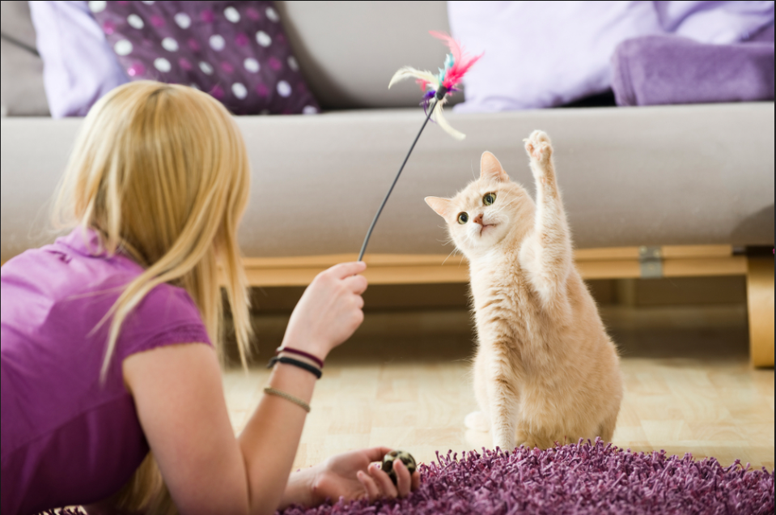

მოიწყინა შენმა პატარა მეგობარმა ჩვენ დაგეხმარებით

PawJoy -- შენი შინაური აღარ მოიწყენს! 🐶🐱
სათამაშოები, რომლებიც ენერგიას არ ამოწურავს.
მეტი ინფორმაციისთვის დააწკაპე
მოტოციკლი/motocycle — ორი ან სამბორბლიანი მექანიკური სატრანსპორტო საშუალებაა, რომლის მუშაობა უზრუნველყოფილია შიდა წვის ძრავით ან ელექტრო ძრავით. მათ გამოიყენებენ სატრანსპორტოდ, სპორტისთვის, ტურიზმისა და რეცრეცციისთვის.
PawJoy -- შენი შინაური აღარ მოიწყენს! 🐶🐱
სათამაშოები, რომლებიც ენერგიას არ ამოწურავს.
მეტი ინფორმაციისთვის დააწკაპე